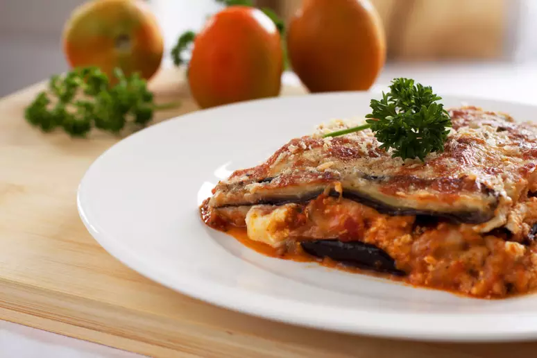

Lasanha de Berinjela (Vegana 🥫)

Lasanha vegana de berinjela
Ingredientes:
1 kg de berinjela cortada em fatias
250 g de proteína vegetal moída
1 cebola cortada em cubos
520 g de polpa de tomate
200 ml de água
Sal a gosto
200 g de queijo vegano cortado em cubinhos
1 colher de sopa de queijo vegano ralado
Modo de preparo:
Clique aqui!